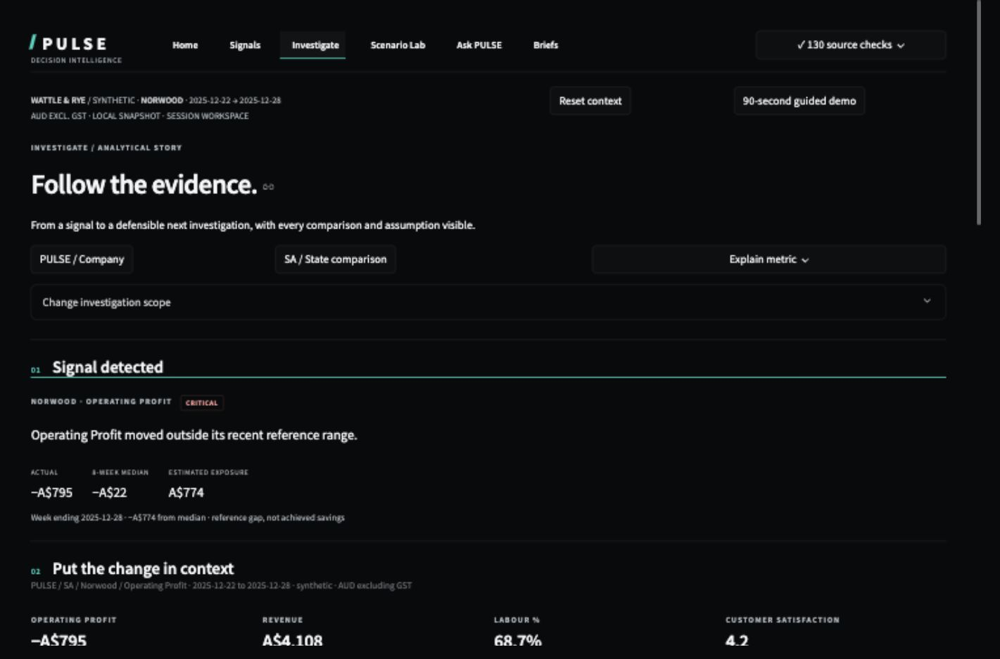
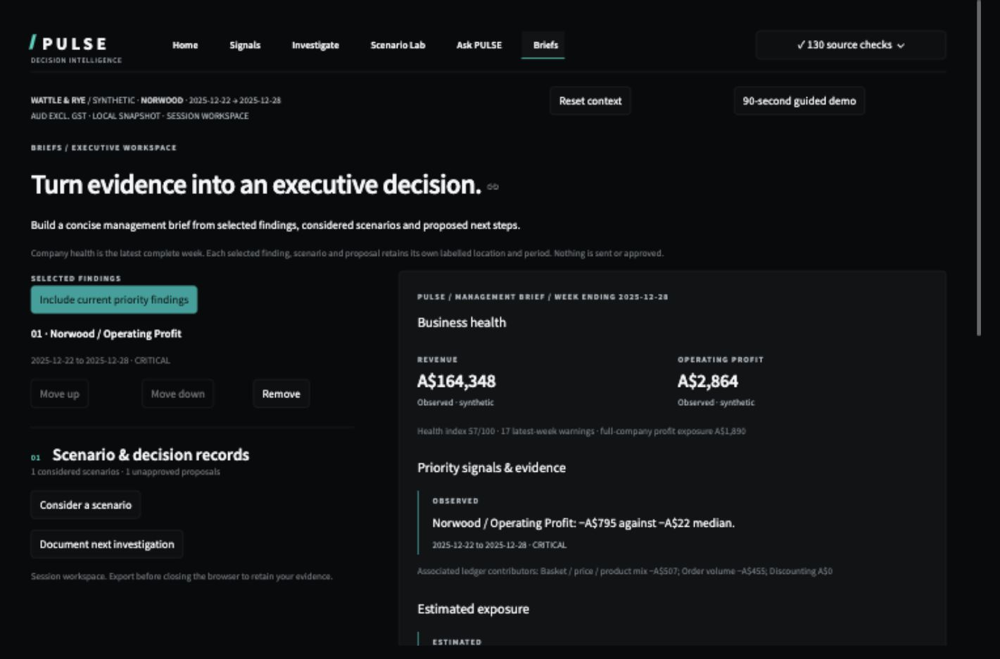

01 / Business early-warning & decision intelligence
PULSE
From “something changed” to a defensible next investigation. A connected decision workspace for managers of a fictional Australian retailer.

01 / The problem
Start with the decision.
A manager needs to know which change deserves attention, why it happened and what to investigate next. A dashboard of totals does not resolve inconsistent metrics, late issue detection or weak follow-through.
The decision to support
Which business signal should receive investigation effort, and what evidence should accompany a proposed response?
02 / The approach
Connect the business and the model.
- Frame the management decision. Simulated discovery, stakeholder mapping and prioritisation connect business requirements to acceptance criteria and verification evidence. The delivery pack contains 29 BA artefacts.
- Protect the financial logic. Independent fact grains, SQL aggregation before joins and a central 19-KPI registry make definitions inspectable. An accounting bridge reconciles profit changes across volume, basket and cost movements.
- Carry the context through the workflow. Home, Signals, Investigate, Scenario Lab, Ask PULSE and Briefs retain the selected location, metric and period. Deterministic analytical answers return numerical evidence without an LLM or generated SQL.
- Turn analysis into a proposed decision. Nine supported operating assumptions can be explored in Scenario Lab. Selected findings and saved assumptions become a downloadable HTML executive brief or JSON evidence record.
03 / A worked example
What the evidence reveals.
Estimated reference gap · Synthetic Norwood example
A$774The full demo records weekly operating profit of approximately −A$795 against a prior-eight-week median of −A$22. The warning directs attention to a difference from a reference, rather than claiming a cause or recoverable savings.
Inspect the warning and previous-week accounting bridge, then test a bounded response. The guided example explores −3% labour hours alongside −1% demand before producing a fictional, unapproved proposal. Feasibility and service effects still need a real pilot.




04 / Inspect the work
Evidence beyond the screen.
The repository documents known-value financial fixtures, source-corruption checks, leakage checks for forecasting and application page tests. The full verification independently reconciles the local snapshot, locations, dimensions and six destinations. These are developer checks, not real-manager UAT.
Explore the source and delivery artefacts below.
05 / Project boundaries
Be clear about what is demonstrated.
All retail data and discovery participants are fictional. The application runs locally and has no published live app. Session records need export; production authentication, integrations and durable decision records are outside this release. Accounting contributors are associations, scenarios are conditional and no achieved business benefits are claimed.
Development used AI assistance. The repository documents the implementation and developer checks; simulated discovery and acceptance exercises do not replace real stakeholder participation.